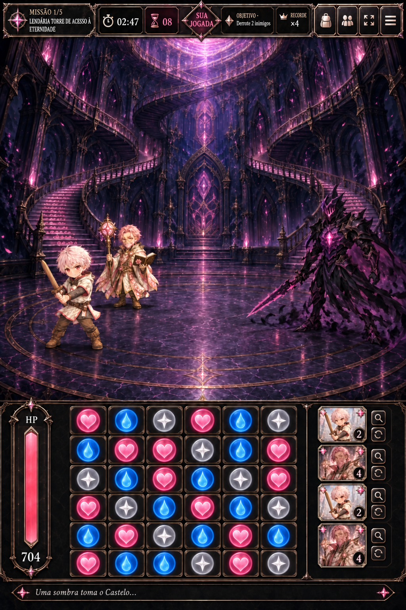

<!doctype html>
<html lang="pt-BR">
<meta charset="utf-8">
<meta name="viewport" content="width=device-width, initial-scale=1, viewport-fit=cover">
<title>Ygdria · Proposta de HUD</title>
<style>
  :root{color-scheme:dark}*{box-sizing:border-box}body{margin:0;min-height:100dvh;background:#08050d;color:#f6e7bf;font-family:Georgia,serif;display:grid;place-items:center;padding:16px}main{width:min(100%,540px)}h1{font-size:17px;letter-spacing:.08em;text-align:center;margin:0 0 12px;color:#e9c76e}p{font:14px/1.4 system-ui,sans-serif;text-align:center;color:#d9c9dd;margin:0 0 16px}.frame{border:1px solid #d9b95c;border-radius:16px;overflow:hidden;background:#120b1b;box-shadow:0 14px 40px #000}.frame img{display:block;width:100%;height:auto}
</style>
<main>
  <h1>PROPOSTA · HUD DE BATALHA</h1>
  <p>Arena ampliada, HUD inferior reduzido e cartas em coluna.</p>
  <div class="frame"></div>
</main>
</html>
